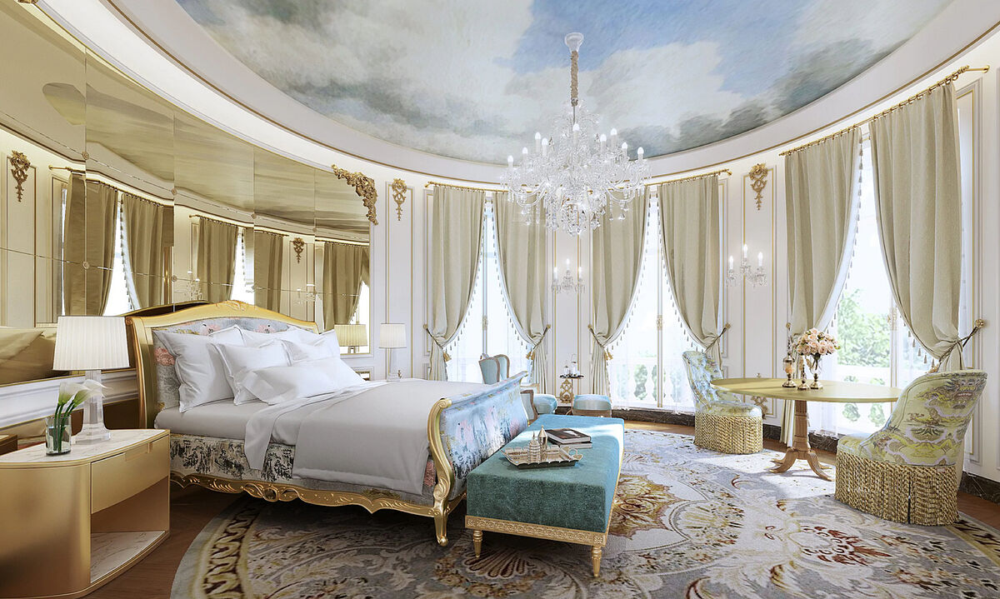
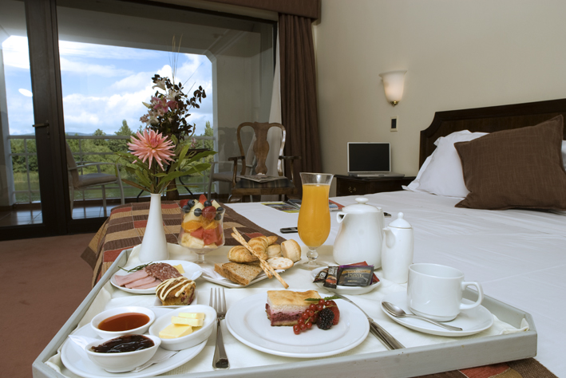
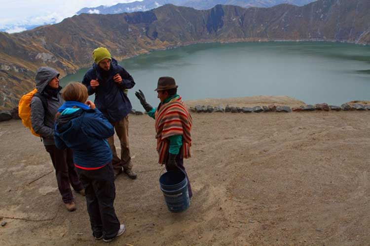

Spa y Masajes: Disfruta de tratamientos de spa rejuvenecedores que incluyen masajes tradicionales balineses, envolturas corporales de hierbas y baños florales para relajar cuerpo y mente.
Excursión a Templos Sagrados: Sumérgete en la espiritualidad de Bali con una visita a antiguos templos sagrados, donde podrás experimentar la tranquilidad y la belleza de estos lugares espirituales.
Clase de Cocina Balinesa: Aprende los secretos de la cocina balinesa durante una clase de cocina interactiva, donde podrás preparar y disfrutar de deliciosos platos locales llenos de sabores exóticos.
Tiempo Libre en la Playa: Dedica tiempo para relajarte en las impresionantes playas de arena blanca de Bali, tomando el sol, nadando en aguas cristalinas o simplemente disfrutando de la serenidad del entorno.
Incluido en el Paquete:
Alojamiento de lujo en un resort boutique con instalaciones de primera clase.
Todas las comidas incluidas, con una variedad de opciones saludables y nutritivas.
Transporte privado para todas las actividades y excursiones mencionadas.
Guía local experto para acompañarte durante todo el viaje y asegurarse de que tu experiencia sea perfecta.
¡Déjate llevar por la magia de Bali y encuentra la armonía entre cuerpo, mente y espíritu en este inolvidable retiro de bienestar!